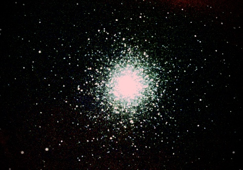
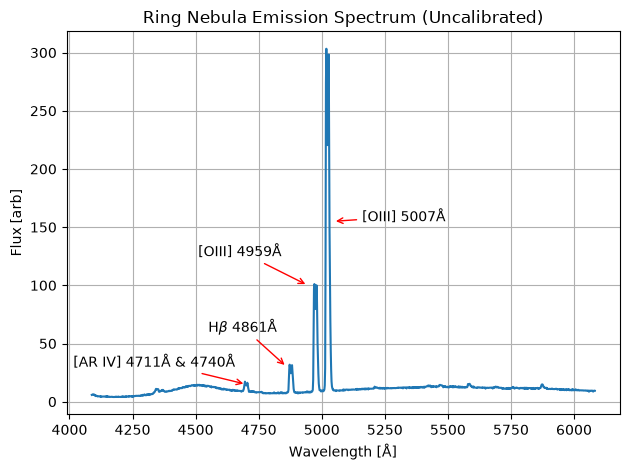

Personal website of Ryan Brady
Teaching at Stony Brook University
To quote the Bard himself, "Brevity is the soul of wit." One of the most important components of being a scientist is the ability to communicate ones ideas, research, and experiences in a format that is suitable to their audience. At Stony Brook University, I have had the pleasure of being a Teaching Assistant for the AST 443/PHY 517 advanced bachelor level lab course, where I am responsible for the operation of the Mount Stony Brook Observatory and for mentoring student projects. Below are two examples of real astronomical data taken by myself and my students, with all data and data analysis publicly available at this GitHub repository.

Composite red-green-blue (RGB) image of the Hercules Cluster (M13) from data acquired by myself and my students at the Mount Stony Brook Observatory.

Emission spectra (uncalibtrated to the instrument sensitivity) of the Ring Nebula, with various identified emission lines labeled.